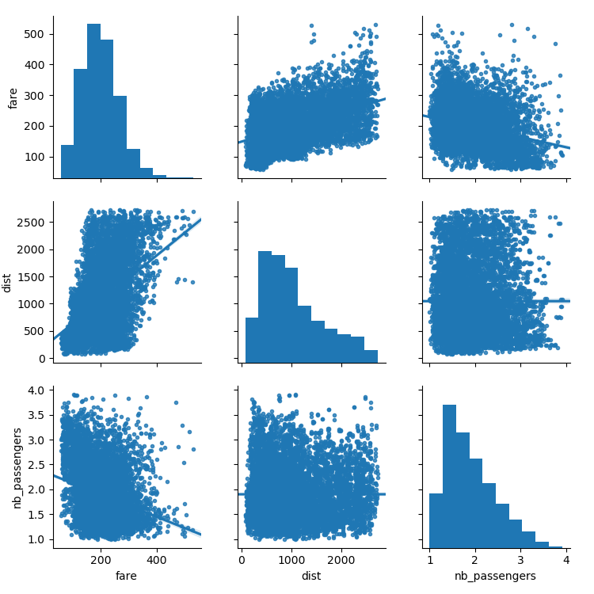

Note
Click here to download the full example code
3.1.6.8. Air fares before and after 9/11¶
This is a business-intelligence (BI) like application.
What is interesting here is that we may want to study fares as a function of the year, paired accordingly to the trips, or forgetting the year, only as a function of the trip endpoints.
Using statsmodels’ linear models, we find that both with an OLS (ordinary least square) and a robust fit, the intercept and the slope are significantly non-zero: the air fares have decreased between 2000 and 2001, and their dependence on distance travelled has also decreased
# Standard library imports
import urllib
import os
Load the data
import pandas
if not os.path.exists('airfares.txt'):
# Download the file if it is not present
urllib.urlretrieve(
'http://www.stat.ufl.edu/~winner/data/airq4.dat',
'airfares.txt')
# As a seperator, ' +' is a regular expression that means 'one of more
# space'
data = pandas.read_csv('airfares.txt', sep=' +', header=0,
names=['city1', 'city2', 'pop1', 'pop2',
'dist', 'fare_2000', 'nb_passengers_2000',
'fare_2001', 'nb_passengers_2001'])
# we log-transform the number of passengers
import numpy as np
data['nb_passengers_2000'] = np.log10(data['nb_passengers_2000'])
data['nb_passengers_2001'] = np.log10(data['nb_passengers_2001'])
Make a dataframe whith the year as an attribute, instead of separate columns
# This involves a small danse in which we separate the dataframes in 2,
# one for year 2000, and one for 2001, before concatenating again.
# Make an index of each flight
data_flat = data.reset_index()
data_2000 = data_flat[['city1', 'city2', 'pop1', 'pop2',
'dist', 'fare_2000', 'nb_passengers_2000']]
# Rename the columns
data_2000.columns = ['city1', 'city2', 'pop1', 'pop2', 'dist', 'fare',
'nb_passengers']
# Add a column with the year
data_2000['year'] = 2000
data_2001 = data_flat[['city1', 'city2', 'pop1', 'pop2',
'dist', 'fare_2001', 'nb_passengers_2001']]
# Rename the columns
data_2001.columns = ['city1', 'city2', 'pop1', 'pop2', 'dist', 'fare',
'nb_passengers']
# Add a column with the year
data_2001['year'] = 2001
data_flat = pandas.concat([data_2000, data_2001])
Plot scatter matrices highlighting different aspects
import seaborn
seaborn.pairplot(data_flat, vars=['fare', 'dist', 'nb_passengers'],
kind='reg', markers='.')
# A second plot, to show the effect of the year (ie the 9/11 effect)
seaborn.pairplot(data_flat, vars=['fare', 'dist', 'nb_passengers'],
kind='reg', hue='year', markers='.')
- 

Plot the difference in fare
import matplotlib.pyplot as plt
plt.figure(figsize=(5, 2))
seaborn.boxplot(data.fare_2001 - data.fare_2000)
plt.title('Fare: 2001 - 2000')
plt.subplots_adjust()
plt.figure(figsize=(5, 2))
seaborn.boxplot(data.nb_passengers_2001 - data.nb_passengers_2000)
plt.title('NB passengers: 2001 - 2000')
plt.subplots_adjust()


Statistical testing: dependence of fare on distance and number of passengers
Out:
OLS Regression Results
==============================================================================
Dep. Variable: fare R-squared: 0.275
Model: OLS Adj. R-squared: 0.275
Method: Least Squares F-statistic: 1585.
Date: Thu, 18 Aug 2022 Prob (F-statistic): 0.00
Time: 10:40:20 Log-Likelihood: -45532.
No. Observations: 8352 AIC: 9.107e+04
Df Residuals: 8349 BIC: 9.109e+04
Df Model: 2
Covariance Type: nonrobust
=================================================================================
coef std err t P>|t| [0.025 0.975]
---------------------------------------------------------------------------------
Intercept 211.2428 2.466 85.669 0.000 206.409 216.076
dist 0.0484 0.001 48.149 0.000 0.046 0.050
nb_passengers -32.8925 1.127 -29.191 0.000 -35.101 -30.684
==============================================================================
Omnibus: 604.051 Durbin-Watson: 1.446
Prob(Omnibus): 0.000 Jarque-Bera (JB): 740.733
Skew: 0.710 Prob(JB): 1.42e-161
Kurtosis: 3.338 Cond. No. 5.23e+03
==============================================================================
Warnings:
[1] Standard Errors assume that the covariance matrix of the errors is correctly specified.
[2] The condition number is large, 5.23e+03. This might indicate that there are
strong multicollinearity or other numerical problems.
Robust linear Model Regression Results
==============================================================================
Dep. Variable: fare No. Observations: 8352
Model: RLM Df Residuals: 8349
Method: IRLS Df Model: 2
Norm: HuberT
Scale Est.: mad
Cov Type: H1
Date: Thu, 18 Aug 2022
Time: 10:40:20
No. Iterations: 12
=================================================================================
coef std err z P>|z| [0.025 0.975]
---------------------------------------------------------------------------------
Intercept 215.0848 2.448 87.856 0.000 210.287 219.883
dist 0.0460 0.001 46.166 0.000 0.044 0.048
nb_passengers -35.2686 1.119 -31.526 0.000 -37.461 -33.076
=================================================================================
If the model instance has been used for another fit with different fit
parameters, then the fit options might not be the correct ones anymore .
Statistical testing: regression of fare on distance: 2001/2000 difference
result = sm.ols(formula='fare_2001 - fare_2000 ~ 1 + dist', data=data).fit()
print(result.summary())
# Plot the corresponding regression
data['fare_difference'] = data['fare_2001'] - data['fare_2000']
seaborn.lmplot(x='dist', y='fare_difference', data=data)
plt.show()

Out:
OLS Regression Results
==============================================================================
Dep. Variable: fare_2001 R-squared: 0.159
Model: OLS Adj. R-squared: 0.159
Method: Least Squares F-statistic: 791.7
Date: Thu, 18 Aug 2022 Prob (F-statistic): 1.20e-159
Time: 10:40:20 Log-Likelihood: -22640.
No. Observations: 4176 AIC: 4.528e+04
Df Residuals: 4174 BIC: 4.530e+04
Df Model: 1
Covariance Type: nonrobust
==============================================================================
coef std err t P>|t| [0.025 0.975]
------------------------------------------------------------------------------
Intercept 148.0279 1.673 88.480 0.000 144.748 151.308
dist 0.0388 0.001 28.136 0.000 0.036 0.041
==============================================================================
Omnibus: 136.558 Durbin-Watson: 1.544
Prob(Omnibus): 0.000 Jarque-Bera (JB): 149.624
Skew: 0.462 Prob(JB): 3.23e-33
Kurtosis: 2.920 Cond. No. 2.40e+03
==============================================================================
Warnings:
[1] Standard Errors assume that the covariance matrix of the errors is correctly specified.
[2] The condition number is large, 2.4e+03. This might indicate that there are
strong multicollinearity or other numerical problems.
Total running time of the script: ( 0 minutes 8.753 seconds)